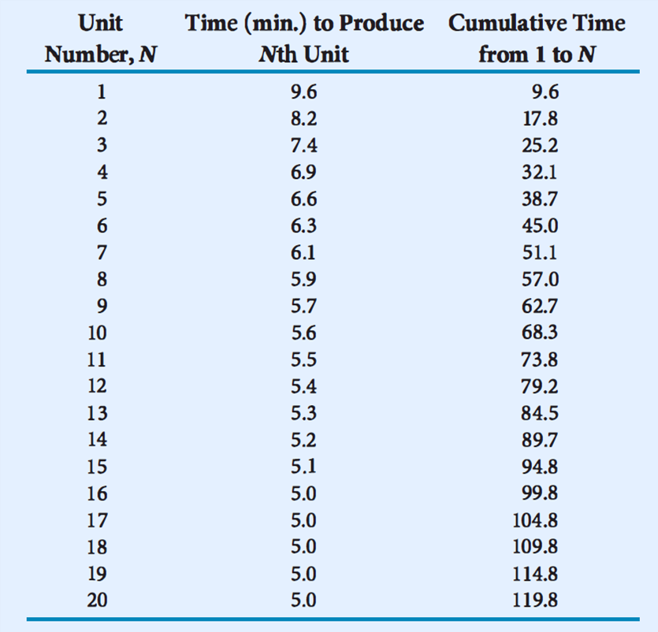

← Back to Index
Example 28 (Slide 116)
Now
we
calculate
the
time
requirements for each unit in the
production run as well as the total
production time required.
TN = 9.6 x N-0.234
The
total
cumulative
time
of
the
production
run
is
119.8
minutes
(2 hours). Thus the total labour cost
estimate would be
2 hours x $22/hour per worker x 2 workers
= $88
116
EXAMPLE continue…
